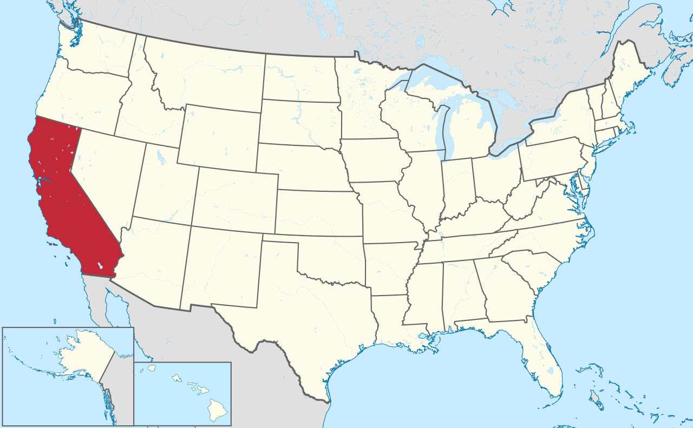

Califórnia é um dos 50 estados dos Estados Unidos, localizado na costa do Pacífico. É o estado mais populoso do país, com mais de 37 milhões de habitantes e é o terceiro em extensão territorial, superado apenas pelo Alasca e pelo Texas. A Califórnia é o maior centro industrial dos Estados Unidos e líder nacional na produção de produtos agropecuários.
Das 20 maiores cidades dos Estados Unidos, quatro estão localizadas na Califórnia: Los Angeles, São José, San Diego e São Francisco. Sua capital, Sacramento, também é uma grande cidade. A região sul da Califórnia é densamente povoada, sendo que as duas maiores cidades do estado (Los Angeles e San Diego) estão localizadas ali. Já na região norte estão localizadas as cidades de São Francisco e São José, além da capital do estado, Sacramento.
O Vale do Silício (Silicon Valley), na Califórnia, é um apelido da região da baía de São Francisco onde estão situadas várias empresas de alta tecnologia, destacando-se na produção de circuitos eletrônicos, na eletrônica e informática. O vale abrange várias cidades do estado, como Palo Alto, São Francisco e Santa Clara, estendendo-se até os subúrbios de São José.
A palavra "silício" vem das empresas de pesquisa e manufatura de circuitos integrados de silício, como a Fairchild Semiconductor e a Intel, mas hoje a região é sede de várias empresas de alta tecnologia, muitas incluídas na Lista 500 da Fortune, além de diversas Startups.
A Califórnia é destino certo para o ano inteiro, com características climáticas que agradam a todos, dos adoradores do sol aos amantes da neve. Saber qual é a melhor época para visitar realmente depende do que você deseja ver e fazer. Grande parte da Califórnia tem clima do tipo mediterrâneo, com verões quentes e secos e invernos amenos e úmidos.
A primavera (tipicamente de março ao início de maio) é uma das mais belas épocas do ano da Califórnia. Embora ainda possa fazer frio em altitudes mais elevadas, as temperaturas são confortáveis e frescas em grande parte do estado. As encostas ficam cobertas por uma grama verde exuberante e por flores silvestres. Os desertos da Califórnia, inundados com papoulas, castillejas e outras flores de clima árido, são muito mais agradáveis na primavera do que durante o calor do verão. Nesses meses, você também encontrará filas mais curtas e melhores ofertas: muitas das principais atrações turísticas do estado ainda estão operando, só que em um ritmo mais lento, e os hotéis geralmente cobram preços de baixa temporada até junho.
Se você pretende esquiar, a neve geralmente reveste as montanhas de novembro a março, com algumas estações permanecendo abertas mesmo de abril em diante. O outono (setembro a novembro) traz um clima ameno e, em algumas partes do estado, folhagem espetacular (especialmente em High Sierra). Esse é um ótimo período para visitar as belas regiões vinícolas da Califórnia durante a colheita da uva, conhecida como "the crush" (geralmente de agosto a outubro).
Sol sem fim, cidades incríveis, os melhores parques temáticos e impressionantes tesouros naturais — seja lá o que você queira fazer e ver nas suas próximas férias a Califórnia tem de tudo.
By Carlos Eduardo Sá